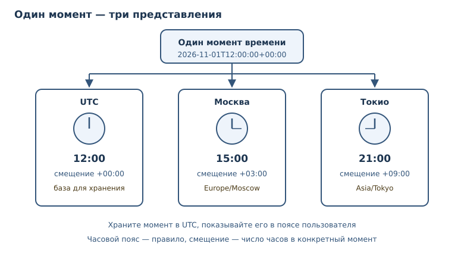
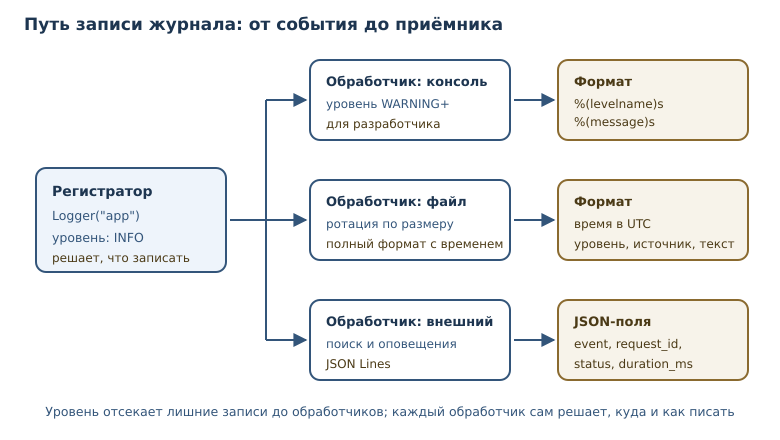

Время, даты и логирование
Как корректно работать со временем и часовыми поясами и как вести журнал, пригодный для разбора сбоев.
В этой главе
Две вещи ломают программы тихо и больно: время и журналы. Время кажется простым, пока не появляются часовые пояса, переход на летнее время и серверы в других регионах. Журналы кажутся скучными, пока не нужно понять, почему заказ не прошёл в три часа ночи.
В этой главе вы научитесь различать «наивное» и «осведомлённое» время, хранить отметки времени в UTC и показывать их в нужном часовом поясе, а также настраивать модуль logging так, чтобы записи были единообразными, безопасными и пригодными для машинного разбора.
37.1 Что вы сможете после этой главы
- создавать даты и интервалы, складывать и вычитать время;
- отличать наивный
datetimeот осведомлённого и объяснять, почему это важно; - переводить моменты между часовыми поясами и хранить их в UTC;
- записывать и разбирать даты по стандарту ISO 8601;
- настраивать уровни, обработчики логов и формат записей;
- вести структурированное логирование в JSON и не утекать секретами.
37.2 datetime: даты, время и интервалы
datetime — тип даты и времени; бывает «наивным» (без зоны) и «осведомлённым» (с часовым поясом). Наивный объект знает числа года, месяца, дня, часа и минуты, но не знает, к какому поясу они относятся. Осведомлённый дополнительно хранит смещение и правило перехода на летнее время.
from datetime import datetime, timedelta, timezone
naive = datetime(2026, 11, 1, 12, 0)
aware = datetime(2026, 11, 1, 12, 0, tzinfo=timezone.utc)
print(naive.tzinfo)
print(aware.tzinfo)
print(naive + timedelta(hours=3))
print(aware + timedelta(hours=3))
None
UTC
2026-11-01 15:00:00
2026-11-01 15:00:00+00:00
timedelta — интервал времени. Сложение и вычитание работают и для дат, и для
интервалов. Обратите внимание: результат для наивного времени не содержит
смещения, а для осведомлённого содержит +00:00. Это не косметика:
порядковое сравнение наивного и осведомлённого времени Python запрещает и
поднимает TypeError, а равенство == всегда даёт False — моменты
несравнимы, пока неизвестен пояс.
from datetime import datetime, timezone
naive = datetime(2026, 11, 1, 12, 0)
aware = datetime(2026, 11, 1, 12, 0, tzinfo=timezone.utc)
print(naive < aware)
TypeError: can't compare offset-naive and offset-aware datetimes
Текущий момент получают функцией datetime.now(timezone.utc): она возвращает
осведомлённое время в UTC. Вызов datetime.now() без аргумента даёт наивное
локальное время — его нельзя однозначно сопоставить с моментом.
from datetime import datetime, timezone
now = datetime.now(timezone.utc)
print(now.isoformat(timespec="seconds")) # 2026-11-01T12:00:00+00:00
Арифметика дат
С датами и интервалами нужно обращаться осторожно: месяц и год имеют разную
длину, а переход на летнее время добавляет или убирает час. timedelta
складывает фиксированные интервалы — дни, часы, минуты. Если нужно «через
месяц», одного timedelta недостаточно: длина месяца зависит от календаря.
Для таких вычислений используют специализированные библиотеки или явно
определяют правило в бизнес-логике.
from datetime import datetime, timezone
start = datetime(2026, 3, 1, tzinfo=timezone.utc)
finish = datetime(2026, 11, 1, 12, 30, tzinfo=timezone.utc)
delta = finish - start
print(delta.days, delta.seconds // 3600, (delta.seconds % 3600) // 60)
245 12 30
Разница между осведомлёнными временами корректна, потому что оба момента
заданы в UTC. Если бы одно из времён было наивным, Python отказался бы
выполнять вычитание: TypeError: can't subtract offset-naive and offset-aware datetimes — пояс второго операнда неизвестен, и результат был бы произвольным.
Правило рабочего проекта: внутри программы и в базе храните только осведомлённое время в UTC, а в человекочитаемый вид переводите на границе — при показе пользователю или формировании отчёта.
37.3 Часовые пояса
Часовой пояс — правило смещения времени относительно UTC; обязательно для корректной работы с датами. Смещение — не константа: в разных странах оно разное, а переход на летнее время меняет его дважды в год.
Модуль zoneinfo из стандартной библиотеки знает правила поясов:
from datetime import datetime, timezone
from zoneinfo import ZoneInfo
instant = datetime(2026, 11, 1, 12, 0, tzinfo=timezone.utc)
print(instant.isoformat())
print(instant.astimezone(ZoneInfo("Europe/Moscow")).isoformat())
print(instant.astimezone(ZoneInfo("Asia/Tokyo")).isoformat())
2026-11-01T12:00:00+00:00
2026-11-01T15:00:00+03:00
2026-11-01T21:00:00+09:00
Это один и тот же момент времени, показанный в трёх поясах. astimezone не
меняет момент, а меняет представление. Сравнение осведомлённых времён работает
по моменту, а не по цифрам на циферблате:
from datetime import datetime
from zoneinfo import ZoneInfo
moscow = datetime(2026, 11, 1, 15, 0, tzinfo=ZoneInfo("Europe/Moscow"))
tokyo = datetime(2026, 11, 1, 21, 0, tzinfo=ZoneInfo("Asia/Tokyo"))
print(moscow == tokyo)
print(moscow.astimezone(ZoneInfo("UTC")).isoformat())
True
2026-11-01T12:00:00+00:00

Часовой пояс не равен смещению. Смещение — конкретное число часов в конкретный
момент; пояс — правило, по которому это число вычисляется. Поэтому хранить
datetime со смещением +03:00 недостаточно, если затем нужно применить
правила другого региона: используйте имя пояса (Europe/Moscow) и zoneinfo.
Неоднозначный час и fold
При обратном переводе часов локальное время повторяется. В ночь на 25 октября
2026 года Берлин возвращается с летнего времени на зимнее: 02:30 случается
дважды. Атрибут fold указывает, какое вхождение имеется в виду: fold=0 —
первое, ещё летнее (+02:00), fold=1 — второе, уже зимнее (+01:00).
from datetime import datetime
from zoneinfo import ZoneInfo
berlin = ZoneInfo("Europe/Berlin")
first = datetime(2026, 10, 25, 2, 30, tzinfo=berlin, fold=0)
second = datetime(2026, 10, 25, 2, 30, tzinfo=berlin, fold=1)
print(first.isoformat(), first.utcoffset())
print(second.isoformat(), second.utcoffset())
print(first.timestamp() - second.timestamp())
2026-10-25T02:30:00+02:00 2:00:00
2026-10-25T02:30:00+01:00 1:00:00
-3600.0
Цифры на циферблате одинаковые, а моменты различаются на час. Без fold
интерпретатор берёт значение по умолчанию 0, и второе вхождение теряется:
два разных момента дают одну и ту же строку. Поэтому локальное время из
внешнего источника разбирают с оговоркой о вхождении, а хранят всё равно UTC.
Обратный случай — пропущенный час при переходе на летнее время: такого
локального времени не существует. fold и здесь выбирает смещение — до
перехода или после, поэтому один и тот же набор цифр может означать разные
моменты.
37.4 Отметки времени и ISO 8601
Отметка времени — момент времени, обычно представленный числом секунд от эпохи Unix. Число не зависит от пояса и удобно для сортировки, хранения и сравнения.
from datetime import datetime, timezone
moment = datetime(2026, 11, 1, 12, 0, tzinfo=timezone.utc)
stamp = moment.timestamp()
print(int(stamp))
print(datetime.fromtimestamp(stamp, tz=timezone.utc).isoformat())
1793534400
2026-11-01T12:00:00+00:00
ISO 8601 — стандартная текстовая запись даты и времени:
2026-11-01T12:00:00+03:00. Формат однозначен, сортируется как строка (при
одинаковом смещении) и понимается большинством языков и баз данных.
from datetime import datetime, timezone
text = "2026-11-01T12:00:00+03:00"
parsed = datetime.fromisoformat(text)
print(parsed.utcoffset())
print(parsed.astimezone(timezone.utc).isoformat())
3:00:00
2026-11-01T09:00:00+00:00
Форматирование для человека
ISO 8601 хорош для обмена, но не всегда удобен для чтения. Для вывода
пользователю применяют strftime с явным шаблоном и явным поясом.
from datetime import datetime, timezone
from zoneinfo import ZoneInfo
moment = datetime(2026, 11, 1, 12, 0, tzinfo=timezone.utc)
local = moment.astimezone(ZoneInfo("Europe/Moscow"))
print(local.strftime("%d.%m.%Y %H:%M"))
print(local.strftime("%d %B %Y"))
01.11.2026 15:00
01 November 2026
Названия месяцев зависят от локали, поэтому для русских подписей нужна
настройка локали или собственная таблица. В книгах и отчётах безопаснее
числовой формат: он одинаково читается на любой машине. Для хранения и
передачи всегда используйте ISO 8601, а strftime — только для показа.
Для хранения выбирайте одно представление и следуйте ему везде: либо целые секунды UTC, либо ISO-строка с явным смещением. Смешивать форматы в одной таблице — верный способ получить «сегодня» и «вчера» в одном отчёте. Если значения приходят без смещения, считайте их неполными: наивное время нельзя однозначно перевести в момент.
37.5 Модуль logging: уровни и обработчики
Модуль logging — модуль стандартной библиотеки для управляемого
журналирования событий. Он разделяет три роли: регистратор (Logger) решает,
что записать; обработчик логов (Handler) решает, куда; форматтер —
как именно.
Уровни важности (DEBUG, INFO, WARNING, ERROR, CRITICAL) задают порог.
Если регистратор настроен на INFO, сообщения DEBUG не попадут в вывод.
Журнал — не замена print: записи имеют уровень, время, источник и
настраиваемый приёмник.
import logging
from io import StringIO
stream = StringIO()
handler = logging.StreamHandler(stream)
handler.setFormatter(logging.Formatter("%(levelname)s:%(name)s:%(message)s"))
logger = logging.getLogger("demo")
logger.handlers.clear()
logger.propagate = False
logger.setLevel(logging.DEBUG)
logger.addHandler(handler)
logger.debug("отладка")
logger.info("задача %d запущена", 7)
logger.warning("файл %s не найден", "config.toml")
print(stream.getvalue(), end="")
DEBUG:demo:отладка
INFO:demo:задача 7 запущена
WARNING:demo:файл config.toml не найден
В примере формат намеренно не содержит времени: иначе вывод зависел бы от
запуска. В рабочем журнале время обязательно, обычно в UTC и ISO 8601.

Параметры %s и %d подставляются лениво: строка форматируется, только
если запись действительно пройдёт фильтр по уровню. Поэтому f-строка в
вызове logger.info тратит работу впустую. От утечки секретов ленивое
форматирование не защищает: если значение попало в запись, оно окажется в
журнале в обоих случаях — маскируйте данные до логирования.
Обработчики и уровни
Один регистратор может писать в несколько мест: в консоль для разработчика, в файл для разбора и во внешнюю систему для мониторинга. Обработчики настраиваются независимо, у каждого свой уровень и формат.
import logging
from logging.handlers import RotatingFileHandler
logger = logging.getLogger("app")
logger.setLevel(logging.INFO)
console = logging.StreamHandler()
console.setLevel(logging.WARNING)
file_handler = RotatingFileHandler("app.log", maxBytes=1_000_000, backupCount=3)
file_handler.setLevel(logging.INFO)
formatter = logging.Formatter("%(asctime)s %(levelname)s %(name)s %(message)s")
for handler in (console, file_handler):
handler.setFormatter(formatter)
logger.addHandler(handler)
RotatingFileHandler ограничивает размер файла и хранит несколько копий:
журнал не растёт бесконечно. В production журнал обычно пишут в стандартный
поток, а сбором занимается инфраструктура; это упрощает контейнеры и
централизованный поиск.
Время в тестах
Код, который читает текущее время напрямую, трудно проверять: результат зависит от запуска. Правильный приём — передавать время как зависимость. Функция принимает «сейчас» параметром или получает часы извне, а тест подставляет фиксированный момент.
from datetime import datetime
def greeting(now: datetime) -> str:
if now.hour < 12:
return "Доброе утро"
return "Добрый день"
Такой код детерминирован: тест передаёт datetime(2026, 11, 1, 9, 0) и
проверяет утреннее приветствие без ожидания реального утра. В рабочем коде
функцию вызывают с текущим временем, полученным в одном месте программы.
37.6 Структурированное логирование
Структурированное логирование — запись логов как структурированных данных
(JSON, поля), пригодных для машинного анализа. Строка «что-то пошло не так»
бесполезна для поиска; запись с полями event, order_id, duration_ms,
status позволяет фильтровать и агрегировать.
import json
import logging
from io import StringIO
stream = StringIO()
handler = logging.StreamHandler(stream)
logger = logging.getLogger("app")
logger.handlers.clear()
logger.propagate = False
logger.setLevel(logging.INFO)
logger.addHandler(handler)
def log_event(event: str, **fields: object) -> None:
payload = {"event": event, **fields}
logger.info(json.dumps(payload, ensure_ascii=False, sort_keys=True))
log_event("order_created", order_id=42, amount=900)
print(stream.getvalue().strip())
{"amount": 900, "event": "order_created", "order_id": 42}
Именование событий
Поле event — это короткое имя в змеином регистре: order_created,
payment_failed, request_finished. Единый словарь событий позволяет
строить графики и оповещения по имени, не разбирая текст сообщения. Если
каждый разработчик придумывает своё имя, журнал превращается в набор
уникальных строк, и машинный анализ становится невозможен.
Имена событий и наборы полей стоит зафиксировать в документации проекта. Тогда новая запись либо вписывается в существующую схему, либо осознанно её расширяет, а не добавляет очередной формат. Проверка схемы записи в тестах ловит опечатки в именах полей до того, как журнал попадёт в систему поиска.
sort_keys=True делает порядок полей предсказуемым, ensure_ascii=False
сохраняет читаемую кириллицу. Каждая строка — самостоятельный JSON-объект, его
называют JSON Lines. Такие логи легко читать построчно и загружать в системы
поиска.
Что писать и чего избегать
Уровни помогают читателю журнала: DEBUG — подробности для разработки,
INFO — значимые события, WARNING — неожиданное, но не сломавшее работу,
ERROR — операция не выполнена, CRITICAL — система не может продолжать.
Не пишите ERROR для ожидаемых ситуаций: если пользователь ввёл неверный
пароль, это INFO или WARNING, иначе журнал ошибок перестаёт быть сигналом.
Сообщение должно отвечать на вопрос «что произошло и с чем», а не «что-то не так». «Не удалось создать заказ» лучше, чем «ошибка», а «не удалось создать заказ order_id=42» лучше обоих. Но идентификаторы, персональные данные и секреты требуют осторожности.
Что попадает в структурированную запись: идентификатор запроса или пользователя, название события, длительность, результат, код ошибки. Чего там быть не должно: паролей, токенов, номеров карт и полных персональных данных. Маскируйте чувствительные поля до записи, а не после. Простое правило: если значение нельзя показать в тикете поддержки, его нельзя и логировать.
Журнал в файл и его пределы
Файл журнала растёт: за день работы сервис может записать миллионы строк. Без
ограничения диск заполнится, и упадёт уже не приложение, а вся машина.
RotatingFileHandler ограничивает размер, TimedRotatingFileHandler — срок
хранения: старые файлы удаляются автоматически. Политику хранения выбирают по
требованиям: для отладки достаточно недели, для аудита — месяцы, но аудит
обычно требует отдельного защищённого хранилища.
Журнал не заменяет метрики. По логам можно найти причину сбоя, но нельзя быстро понять, что сбоев стало больше: для этого нужны счётчики и графики. Логи, метрики и трассировки дополняют друг друга, и в зрелой системе есть все три инструмента. Начинать достаточно с логов, но по мере роста нагрузки счётчики и распределённая трассировка становятся необходимостью.
37.7 Типичные ошибки
- Хранить наивное время. Без пояса невозможно восстановить момент; сервер переехал в другой регион — и отчёты сломались.
- Хранить локальное время вместо UTC. Переход на летнее время создаёт дубликаты и пропуски; UTC избавляет от них.
- Считать смещение часовым поясом.
+03:00не описывает правила перехода; для конверсий нужно имя пояса. - Сравнивать наивное и осведомлённое время. Python поднимает
TypeError, а в языках без такой проверки ошибка проходит молча. - Писать в лог секреты и персональные данные. Журналы копируются, индексируются и хранятся дольше, чем кажется.
- Использовать
printвместо логирования. Нет уровней, времени и возможности отключить вывод без правки кода. - Собирать сообщение f-строкой с данными. Это дороже и повышает риск
утечки; передавайте параметры в
logger.info("...", value). - Логировать в библиотеке без настроек. Библиотека должна создавать регистратор и не настраивать глобальный вывод: это дело приложения.
- Забывать про локаль и формат дат в логах. Смешение форматов мешает сравнивать записи между сервисами; фиксируйте UTC и ISO 8601.
37.8 Упражнения
1. Наивное и осведомлённое
Создайте наивный datetime на 1 ноября 2026 года, 12:00 и осведомлённый с
timezone.utc. Попробуйте сравнить их и объясните ошибку. Затем переведите
осведомлённое время в Europe/Moscow.
2. Перевод между поясами
Дан момент 2026-11-01T12:00:00+00:00. Покажите его в Москве, Токио и
Нью-Йорке. Убедитесь, что все три значения обозначают один момент.
3. Интервалы
Вычислите, сколько дней, часов и минут прошло между
2026-03-01T00:00:00+00:00 и 2026-11-01T12:30:00+00:00. Используйте
timedelta.
4. Отметка времени
Преобразуйте момент 2026-11-01T15:00:00+03:00 в число секунд от эпохи и
обратно в ISO-строку UTC. Убедитесь, что момент сохранился.
5. Переход на летнее время
В ночь на 25 октября 2026 года Берлин возвращается на зимнее время, и 02:30
случается дважды. Создайте два datetime с ZoneInfo("Europe/Berlin") и
fold=0/fold=1, сравните их смещения и объясните, почему без fold второй
момент теряется. Затем переведите 2026-03-29T01:30:00+00:00 в Берлин и
Москву и объясните, почему результаты отличаются.
6. Настройка логирования
Настройте регистратор так, чтобы в консоль попадали только WARNING и выше,
а в файл — всё начиная с INFO. Запишите три сообщения разных уровней и
объясните, где какое оказалось.
7. Разбор журнала
Дан список строк вида "INFO:start", "ERROR:fail". Разберите их в список
словарей {"level": ..., "message": ...} и посчитайте, сколько записей
каждого уровня.
8. Структурированная запись
Напишите функцию log_request(request_id: str, path: str, status: int, duration_ms: int), которая пишет одну JSON-запись. Проверьте, что JSON
разбирается обратно и содержит все поля.
9. Секреты в логах
Дан код, который пишет в лог полный словарь запроса, включая заголовок
Authorization. Объясните, чем это опасно, и перепишите код с маскированием.
Опишите, какие поля нужно скрывать.
10. Мини-проект: журнал запросов
Соберите функцию, которая принимает список событий с фиксированными моментами
времени и печатает структурированные записи в формате JSON Lines. Каждая
запись содержит timestamp в UTC, event, path, status. Проверьте вывод
и разберите его обратно в список словарей.
37.9 Проверка понимания
- Чем наивное время отличается от осведомлённого?
- Почему в базе хранят UTC, а не локальное время?
- Чем смещение отличается от часового пояса?
- Что означает ISO 8601 и почему этот формат удобен?
- Как связаны регистратор, обработчик и форматтер?
- Зачем нужно структурированное логирование?
- Какие сведения нельзя писать в журнал и почему?
37.10 Что дальше
Время и журналы сопровождают программу в работе, а работа редко бывает
последовательной: сервер обслуживает много запросов одновременно. Логи с
отметками времени помогают восстановить порядок событий, когда несколько
потоков пишут в один журнал. Следующая
глава — о конкурентности, потоках, процессах и GIL. О модуле datetime в
контексте файлов говорилось в главе 19, об уровне
логирования — в главе 11.